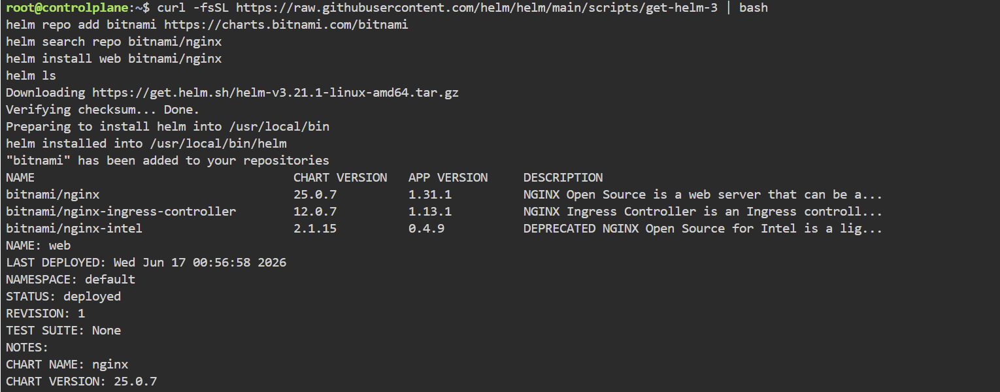
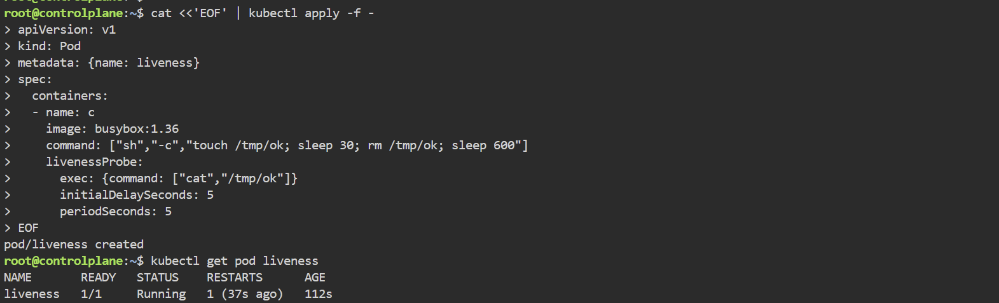

헬름 · 개발 워크플로(CI/CD) · 자기수복 앱
헬름 패키징 → 개발 워크플로(도커 vs 쿠버네티스) → 자기수복(프로브·원자적 업그레이드) 순서로 실습했다.
헬름으로 애플리케이션 패키징
헬름은 여러 YAML을 차트로 묶는 쿠버네티스 패키지 관리자다. 차트를 클러스터에 설치한 인스턴스가 릴리스이고, 템플릿 변수({{ }})는 설치 시점에 값으로 치환된다.
choco install -y kubernetes-helm # 헬름 설치(윈도우)
helm version # 설치 확인
helm repo add kiamol https://kiamol.net # 원격 리포 추가
helm repo update # 캐시 업데이트
helm search repo vweb --versions # 차트 검색
helm search repo 결과
(실습 화면 캡처)
helm show values로 파라미터를 확인하고 --set으로 값을 바꿔 설치한다. helm upgrade로 업데이트:
helm show values kiamol/vweb --version 1.0.0 # 파라미터 기본값
helm install --set servicePort=8010 --set replicaCount=1 ch10-vweb kiamol/vweb --version 1.0.0 # 설치
helm ls # 릴리스 확인
helm upgrade --set servicePort=8010 --set replicaCount=3 ch10-vweb kiamol/vweb --version 1.0.0 # 업데이트

▲ Helm을 설치하고 차트 저장소 추가·검색(
helm search) 후 helm install 로 배포 — STATUS: deployed.
차트는 매니페스트 디렉터리이고, 설정값 자리를 템플릿 변수로 둔다. web-ping 차트의 디플로이먼트:
apiVersion: apps/v1
kind: Deployment
metadata:
name: {{ .Release.Name }} # 릴리스 이름이 들어갈 템플릿 변수
spec:
containers:
- name: app
image: kiamol/ch10-web-ping
env:
- name: TARGET
value: {{ .Values.targetUrl }}
- name: INTERVAL
value: {{ .Values.pingIntervalMilliseconds | quote }}
cd ch10
helm lint web-ping # 차트 유효성 검증
helm install wp1 web-ping/ # 차트 디렉터리에서 설치
helm install --set targetUrl=kiamol.net wp2 web-ping/ # 값을 달리한 릴리스
차트를 공유하려면 리포지터리가 필요하다. 차트뮤지엄을 비공개 리포로 띄우고 패키징한 차트를 업로드:
helm repo add stable https://charts.helm.sh/stable # 공식 헬름 리포
# 차트뮤지엄 설치
helm install --set service.type=LoadBalancer --set service.externalPort=8008 --set env.open.DISABLE_API=false repo stable/chartmuseum --version 2.13.0 --wait
helm package web-ping # 차트 패키징
# 패키징된 차트 업로드
curl --data-binary "@web-ping-0.1.0.tgz" $(kubectl get svc repo-chartmuseum -o jsonpath='http://{.status.loadBalancer.ingress[0].*}:8008/api/charts')
helm install -f web-ping-values.yaml wp3 local/web-ping # 설정 파일로 로컬 리포 차트 설치
차트뮤지엄 업로드 결과
(실습 화면 캡처)
의존 차트는 condition으로 켜고 끈다. 상위 차트(pi)가 하위 차트(vweb, proxy)를 참조하되 프록시는 필요할 때만 설치:
apiVersion: v2
name: pi
version: 0.1.0
dependencies: # 이 차트가 의존하는 다른 차트
- name: vweb
version: 2.0.0
repository: https://kiamol.net # 차트 출처가 리포지터리
condition: vweb.enabled # 필요할 때만 설치
- name: proxy
version: 0.1.0
repository: file://../proxy # 로컬 디렉터리에 있는 차트
condition: proxy.enabled # 필요할 때만 설치
helm dependency build pi # 하위 차트 빌드(내려받기)
helm install pi1 ./pi --dry-run # 오류 여부 검증
helm install --set serviceType=ClusterIP --set proxy.enabled=true pi2 ./pi # 프록시 포함 설치
개발 워크플로 — 도커 vs 쿠버네티스
도커 워크플로는 내부 주기에 도커가 깊이 관여하고, 쿠버네티스 워크플로는 내부 주기에서 도커를 빼고 외부 주기(클러스터 빌드)에서만 컨테이너를 쓴다.
도커 워크플로 — 로컬에서 빌드·실행하고 같은 이미지를 쿠버네티스에 배치. 로컬 이미지를 쓰도록 imagePullPolicy: IfNotPresent 지정:
cd ch11
docker-compose -f bulletin-board/docker-compose.yml build # 빌드
docker-compose -f bulletin-board/docker-compose.yml up -d # 실행
kubectl apply -f bulletin-board/kubernetes/ # 클러스터에 배치
# 소스 수정 후 재빌드 → 파드 삭제로 새 버전 교체
docker-compose -f bulletin-board/docker-compose.yml build
kubectl delete pod -l app=bulletin-board
쿠버네티스 워크플로 — 로컬에서 도커를 배제하고 커밋하면 클러스터가 빌드한다. 깃 서버 Gogs와 BuildKit+buildpacks를 클러스터에 띄운다:
kubectl apply -f infrastructure/gogs.yaml # 깃 서버 배치
git push gogs # 코드 푸시
kubectl apply -f infrastructure/buildkitd.yaml # BuildKit 배치
kubectl exec deploy/buildkitd -- sh -c 'git version && buildctl --version' # 도구 확인
# Dockerfile 없이 buildpacks로 빌드
buildctl build --frontend=gateway.v0 --opt source=kiamol/buildkit-buildpacks --local context=src --output type=image,name=kiamol/ch11-bulletin-board:buildkit
네임스페이스는 리소스를 묶는 단위로, 삭제하면 소속 리소스도 함께 삭제된다. 컨텍스트는 접속 클러스터와 기본 네임스페이스를 묶은 것이다:
kubectl create namespace kiamol-ch11-test # 네임스페이스 생성
kubectl apply -f sleep.yaml --namespace kiamol-ch11-test # 그 안에 배치
kubectl config set-context --current --namespace=kiamol-ch11-test # 기본 네임스페이스 변경
kubectl config view # 접속 설정 확인
kubectl delete namespace kiamol-ch11-uat # 삭제 → 소속 리소스도 삭제
네임스페이스 삭제는 곧 일괄 삭제
kubectl delete namespace는 그 안의 모든 리소스를 한꺼번에 지운다. 삭제 전 kubectl get all -n <네임스페이스>로 내용을 확인한다.
자기수복형 애플리케이션
쿠버네티스는 컨테이너 실행 여부는 알지만 내부 애플리케이션 정상 여부는 모른다. 컨테이너 프로브로 이를 검사한다. 레디니스 실패 시 서비스 엔드포인트에서 제외, 리브니스 실패 시 컨테이너 재시작이다.
numbers-api는 몇 번 호출하면 고장 나는 앱이다. 레디니스 프로브를 붙이면 고장 난 파드가 엔드포인트에서 빠진다:
spec:
containers:
- image: kiamol/ch03-numbers-api
readinessProbe: # 프로브는 컨테이너 수준에서 정의된다
httpGet:
path: /healthz # 이 URL에 HTTP GET 요청을 보낸다
port: 80
periodSeconds: 5 # 5초에 한 번씩 상태를 확인한다
cd ch12
kubectl apply -f numbers/ # API 배치
kubectl get endpoints numbers-api # 엔드포인트 포함 확인
kubectl apply -f numbers/update/api-with-readiness.yaml # 레디니스 프로브 적용
curl "$(cat api-url.txt)/rng" # 호출해 고장 유발
kubectl get endpoints numbers-api # 엔드포인트에서 제외 확인
get endpoints — 레디니스로 제외
(실습 화면 캡처)
리브니스 프로브를 더하면 고장 난 파드가 재시작된다. initialDelaySeconds로 첫 체크를 늦추고 failureThreshold로 실패 허용 횟수를 정한다:
livenessProbe:
httpGet: # 레디니스 프로브와 마찬가지로
path: /healthz # HTTP GET 요청으로 상태를 체크
port: 80
periodSeconds: 10
initialDelaySeconds: 10 # 첫 번째 상태 체크 전 10초 대기
failureThreshold: 2 # 상태 체크 실패 두 번까지는 용인
kubectl apply -f numbers/update/api-with-readiness-and-liveness.yaml # 레디니스+리브니스 적용
curl "$(cat api-url.txt)/rng" # 고장 유발
kubectl get pods -l app=numbers-api # RESTARTS 증가 확인

▲ 헬스 체크 파일이 사라져 리브니스 프로브가 실패하자 kubelet이 컨테이너를 재시작한다(RESTARTS 1).
비-HTTP 컴포넌트는 다른 방식을 쓴다. PostgreSQL은 레디니스에 포트 확인(tcpSocket), 리브니스에 명령 실행(exec)을 둔다:
readinessProbe:
tcpSocket:
port: 5432 # DB가 이 포트를 주시하는지 체크
periodSeconds: 5
livenessProbe:
exec: # 명령행 도구를 실행하여 동작 여부 체크
command: ["pg_isready", "-h", "localhost"]
periodSeconds: 10
initialDelaySeconds: 10
헬름 --atomic은 설치·업그레이드 실패 시 자동으로 이전 상태로 롤백한다:
helm install --atomic todo-list todo-list/helm/v1/todo-list/ # 원자적 설치
helm upgrade --atomic --timeout 30s todo-list todo-list/helm/v2/todo-list/ # 잘못된 업그레이드 → 자동 롤백
# 이미지가 롤백으로 그대로인지 확인
kubectl get pods -l app=todo-list-db -o=custom-columns=NAME:.metadata.name,STATUS:.status.phase,IMAGE:.spec.containers[0].image
헬름 훅으로 생애 주기 특정 시점에 작업을 끼운다. helm.sh/hook: test는 설치 후 스모크 테스트를 실행:
apiVersion: batch/v1
kind: Job # 잡 정의
metadata:
annotations:
"helm.sh/hook": test # 헬름 test로 실행할 잡임을 명기
spec:
completions: 1
backoffLimit: 0 # 한 번만 실행하며 재시도하지 않음
template:
spec:
containers:
- image: postgres:11.8-alpine
command: ["psql", "-c", "SELECT COUNT(*) FROM \"public\".\"ToDos\""]
helm test todo-list # 스모크 테스트 실행
kubectl logs -l job-name=todo-list-db-test # 테스트 잡 로그
helm test 통과
(실습 화면 캡처)
막혔던 점
- (윈도우)
curl --data-binary업로드 실패 →curl이Invoke-WebRequest앨리어스.Remove-Item Alias:curl -ErrorAction Ignore로 실제curl.exe사용. - 차트 설치 후 로그가 비어 있음 → 일정 간격 앱이라 첫 요청 전.
kubectl logs -l app=web-ping --tail 1로 확인. - 의존 차트 미설치로 상위 차트 설치 실패 →
helm dependency build pi로 하위 차트 먼저 내려받기. - 다른 네임스페이스 파드가 안 보임 →
-n <네임스페이스>또는--all-namespaces지정. - 컨테이너는 Running인데 앱은 고장 → 레디니스/리브니스 프로브 추가.
- 헬름 업그레이드가 멈춘 듯 보임 →
--atomic이 레디니스 통과를 대기하는 정상 동작.--timeout후 자동 롤백.